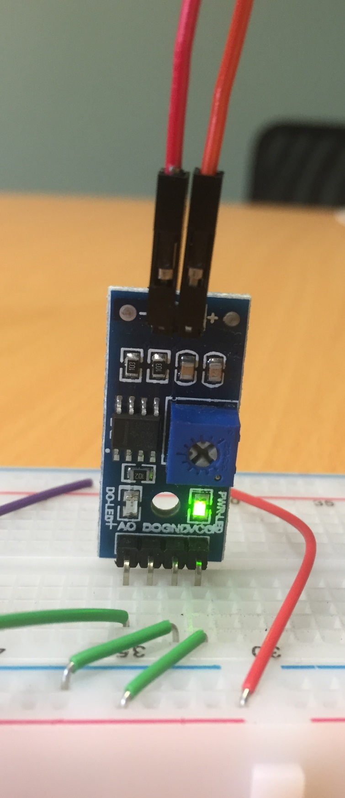

Soil moisture sensing
Lesson #10—Plant science meets electronicsTheory
The simplest way to measure soil moisture is by measuring electrical conductivity. The greater the moisture content, the greater the conductivity.
The provided soil moisture sensors have a spike that can be driven into the ground and a control board that measures the conductivity and outputs an analog voltage signal.
The control board pinout is:
- Analog output
- Digital output
- GND (ground)
- Vcc (the positive power supply = 5 V)
The analog output is a voltage that is related to the soil conductivity. A lower voltage corresponds to a greater conductivity.
The digital output produces an output defined to be
| Output (logic level) | Output (voltage) | Situation |
|---|---|---|
| 0 | 0 V | Soil conductivity is below the threshold |
| 1 | 5 V | Soil conductivity is above the threshold |
The threshold is defined by the potentiometer dial on the control board.
Of course, you can easily implement this kind of logic yourself using if
statements. Therefore the analog output is more powerful, and we will focus on
it.
Wiring

- Plug the control board into your breadboard, such that the pins are on independent rows (and are not shorted together!)
- Connect the Vcc pin to your +5 rail.
- Connect the GND pin to your ground rail.
- Connect the analog output to one of the Arduino’s analog pins, e.g. A1.
Exercise
Using a program similar to Lesson 5, read the voltage produced by the sensor.
Touch the sensor with your fingers. The conductivity of your skin will influence the measurement.
Try filling a cup with water and then carefully dip the sensor into the water.
Calibration
Conductivity sensors need to be calibrated for each type of soil. They are mainly useful to “wet vs dry” type measurements. However, with care, you can use these to monitor the gradual loss of water from soil.
Waterproofing
The easiest way to waterproof the sensor system is to cover the top of the spike with epoxy resin. Run the wires back to a waterproof box or enclosure.
Application ideas
- Detect sea levels and tide times by observing the change in conductivity when the sensor becomes inundated.
- Put the sensor into a pot plant to monitor water demand, e.g. when comparing multiple plants that are subjected to different treatments.
- Build a Thirsty Flamingo.